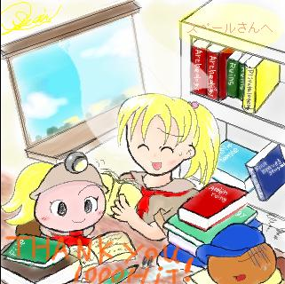

THANK YOU １０００HIT！ スペール様へ
|  |
Now ｌet's open an old far story.
（さあ、遠い昔の物語を開こう）
スペール様からのリクエスト、クリスチーヌ擬人化です。
もし余裕があれば原型も、との事だったので、よろこんで描かせていただきました。
（スペースが余ったので、オマケでもう一匹ｖ）
本持参・・との事だったので、in図書室です。
ええと、また、管理人の作り出したシュチュエーションはこうです（笑）↓
「あう〜・・；」
「クリオ、どうしたの？・・もうギブアップ？」
「も、もうって・・。こんな難しい暗号みたいな古文書を何時間もぶっ続けで・・」
「これくらい、考古学者を目指す者には普通よ？」
「・・帰ったらカメキにそう言っとくよ・・」
擬人化の方のクリスは傍観者です＾ワ＾；
いや、彼女は考古学や伝説が絡んだら時間を忘れていそうだなぁ〜・・と；
それではスペール様、リクエストありがとうございました！
スペール様のみ、保存、転載可能です。